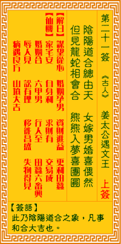

观音灵签第二十一签 【李旦龙凤配合】 |
 | |||
阴阳道合总由天 女嫁男婚岂偶然 但看龙蛇堪运动 熊罴叶梦喜团圆 |
||||
| 【吉凶】 | 上吉签 | 【宫位】 | 辰宫 | |
| 【签语】 | 此卦阴阳道合之象，凡事和合大吉也。 | |||
| 【解曰】 | 谋望从心 婚姻孕男 资财进益 更利田蚕 | |||
| 【仙机】 | 此签家宅安，自身利，求财有，交易成，婚姻合，六甲男，田蚕六畜兴，行人至，寻人见，讼有理，移徙昌盛，失物得见，病遇良方，山 坟大吉。 | |||
| 【详解】 | 阴阳和合因果交替循环，这是自然不变的道理，男女之间的姻缘婚配难道只是巧合?且看龙腾蛇行交会之时，吉梦维何?维熊维罴，这是很好的吉兆啊。 营谋皆遂，婚姻孕男，资财积聚，更吉田蚕。此签阴阳道合之象，凡事和合大吉。 阴阳道合之签也。凡事和合而大吉者。君逢此为上吉之运。凡事渐获进步。惟不可欲速成。更不得存有欺人之心。今之形成者。获来不易。佳境之时。宜更修之。省之。积吾善可也。易言之。君之今。营谋皆逐。婚姻孕男。资财积聚更吉田亩之收。 此签有”一探究竟”之意。鼓励当事人，保持旺盛的好奇心。须知很多事情虽然看似错综复杂，但详加深入了解之后，便会发现其实并没有想象中那么困难。凡事穷究源头，用心体会、细心观察、深入探讨研究，必能看出其中的奥妙，进而消化吸收之后，转为自己的一套做人处世之道，再推己及人。唯有自己亲身去尝试、体悟出来的道理，才是真正属于自己的智慧。 | |||
| 【典故】 | 李旦是唐高宗李治的儿子，当过皇帝，是为睿宗。武则天登位做了女皇帝后，李旦被贬为平民，其间和民女胡凤姣相识。民间传说，他们 二人手上各有半个从胎带中取出的方印，经过‘斗印’钙明能合一，而结为夫妻。现在湖北省武汉市之鹦鹉州上还有胡凤姣墓的遗迹。楚剧：《斗印》故事 | |||